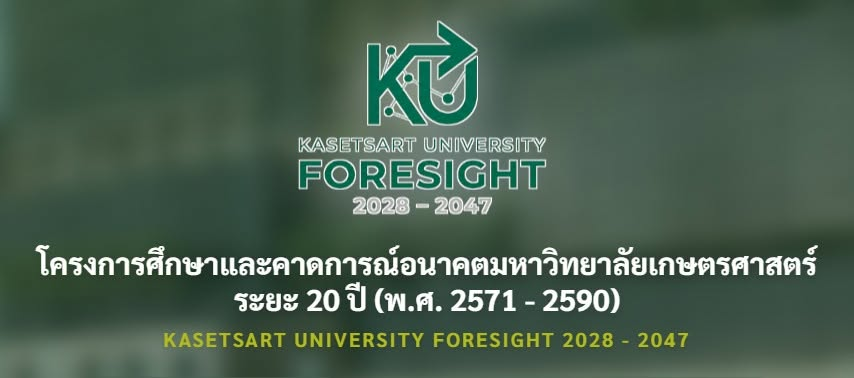

คู่มืออ่านชุดเอกสาร KU Foresight 2028–2047
{kind=link}

ชุดเอกสารประกอบโครงการศึกษาและคาดการณ์อนาคตมหาวิทยาลัยเกษตรศาสตร์ ระยะ 20 ปี ไม่ได้มีเพียงกำหนดการประชุม แต่รวมรายงานระดับโลก เอกสารนโยบาย กฎหมาย แผนระดับประเทศ แผนของมหาวิทยาลัย และข้อมูลพื้นฐานของ มก. ไว้ค่อนข้างมาก
คุณค่าของชุดนี้อยู่ที่การนำ outside-in และ inside-out มาอ่านร่วมกัน: โลกกำลังเปลี่ยนอย่างไร และมหาวิทยาลัยมีคน หลักสูตร งบประมาณ ระบบดิจิทัล งานวิจัย และข้อจำกัดแบบใดในการตอบสนองต่อการเปลี่ยนแปลงนั้น
ถ้ามีเวลาน้อย ให้เริ่มจากสี่กลุ่มนี้
หนึ่ง อ่านรายงานวิเคราะห์เชิงอนาคตต่อมหาวิทยาลัยเกษตรศาสตร์ เพื่อเห็นการสังเคราะห์ที่ผูกกับบริบท มก. โดยตรง สอง อ่าน Global Risks Report เพื่อเห็นความเสี่ยงที่เชื่อมโยงกันในระดับโลก สาม อ่าน Shaping the Future of Learning เพื่อมองการเปลี่ยนแปลงของการเรียนรู้ในยุค AI และสี่ อ่านข้อมูลพื้นฐานของ มก. เพื่อทดสอบว่าวิสัยทัศน์ที่เสนอมีฐานทรัพยากรและข้อจำกัดจริงอย่างไร
• รายงานการวิเคราะห์เชิงอนาคตต่อมหาวิทยาลัยเกษตรศาสตร์
• WEF Global Risks Report 2026
• Shaping the Future of Learning 2026: Education Readiness for the Age of AI
เอกสารโครงการ
บริบทโลก เศรษฐกิจ และ PESTEL
• PESTEL สำหรับมหาวิทยาลัยเกษตรศาสตร์
• สถานการณ์โลกกับแนวทางการปรับตัวของอุดมศึกษาไทยและมหาวิทยาลัยเกษตรศาสตร์
Mega Trend และเทคโนโลยี
• Roland Berger Trend Compendium 2050
• Trend Compendium 2050 ฉบับสรุปประกอบการประชุม
• แนวโน้มธุรกิจและอุตสาหกรรมไทย ปี 2569–2571
Foresight, SDGs และ Global Risks
• OECD-FAO Agricultural Outlook 2025–2034
• The 2030 Agenda for Sustainable Development
• Shaping the Future of Learning 2026
• รายงานอัปเดตเทรนด์การพัฒนาของโลก
อนาคตการศึกษาและ AI
• Shaping the Future of Learning 2026: Education Readiness for the Age of AI
• Global Education Monitoring Report 2026 Summary
เกษตร อาหาร และความมั่นคงทางอาหาร
• Global Report on Food Crises 2026
• The Future of Agriculture and Food Security
• The World of Organic Agriculture: Statistics and Emerging Trends 2026
กฎหมายและแผนของกระทรวง อว.
• พระราชบัญญัติการอุดมศึกษา พ.ศ. 2562
• พระราชบัญญัติการอุดมศึกษา ฉบับที่ 2 พ.ศ. 2568
• พระราชบัญญัติมหาวิทยาลัยเกษตรศาสตร์ พ.ศ. 2558
• แผนปฏิบัติราชการระยะ 5 ปี ของกระทรวง อว.
แผนระดับประเทศและแผนมหาวิทยาลัยเกษตรศาสตร์
• ผังความเชื่อมโยงระหว่างแผนระดับต่าง ๆ กับแผน มก.
• รายละเอียดความเชื่อมโยงระหว่างแผนระดับต่าง ๆ กับแผน มก.
• ยุทธศาสตร์ 4 ปี พ.ศ. 2567–2570 มหาวิทยาลัยเกษตรศาสตร์
• แผนปฏิบัติการ 4 ปี พ.ศ. 2567–2570 มหาวิทยาลัยเกษตรศาสตร์
• ยุทธศาสตร์ชาติ 20 ปี พ.ศ. 2561–2580
• แผนแม่บทภายใต้ยุทธศาสตร์ชาติ พ.ศ. 2566–2580
ข้อมูลพื้นฐานของมหาวิทยาลัยเกษตรศาสตร์
• KU SDGs Executive Report 2024–2026
• ข้อมูลสถิติ มก. ปีบัญชี พ.ศ. 2569
• ข้อมูลทุนอุดหนุนการศึกษานิสิต
• ข้อมูลงบประมาณ ปีงบประมาณ พ.ศ. 2565–2574
• รายงานงบประมาณมหาวิทยาลัยเกษตรศาสตร์ ประจำปีบัญชี พ.ศ. 2569
• ข้อมูลงบประมาณเทคโนโลยีดิจิทัลสารสนเทศ
• สถานะและความก้าวหน้าของระบบ MIS / KU Smart Data
• ข้อมูลการได้งานทำและคุณภาพบัณฑิต
• ข้อมูลโครงการและงบประมาณโครงการวิจัย
• ข้อมูลผลงานตีพิมพ์และเผยแพร่ระดับชาติและนานาชาติ
ข้อมูลอื่น
อ่านเพื่อออกแบบคำถาม ไม่ใช่เพียงสรุปแนวโน้ม
การมีรายงานจำนวนมากไม่ได้ทำให้เกิด foresight โดยอัตโนมัติ เอกสารเหล่านี้ควรถูกใช้เพื่อเปรียบเทียบสมมติฐาน หาแรงเปลี่ยนที่เชื่อมโยงกัน มองเห็นความไม่แน่นอน และสร้างฉากทัศน์หลายแบบ ไม่ใช่นำ mega trends มาต่อเป็นรายการโครงการใหม่
การคิดอนาคตมหาวิทยาลัย 20 ปีไม่ควรจบแค่เพิ่มหลักสูตร เพิ่มโครงการ หรือปรับโครงสร้างหน่วยงาน แต่ควรถามลึกกว่านั้นว่า มหาวิทยาลัยจะเป็นโครงสร้างพื้นฐานทางความรู้ ความร่วมมือ และความไว้วางใจของสังคมได้อย่างไร
บทความที่เกี่ยวข้อง มองมหาวิทยาลัยอีก 20 ปี ต้องคิดให้พ้นจากมหาวิทยาลัยวันนี้ ข้อสังเกตจากวงสนทนา KU Strategic Foresight